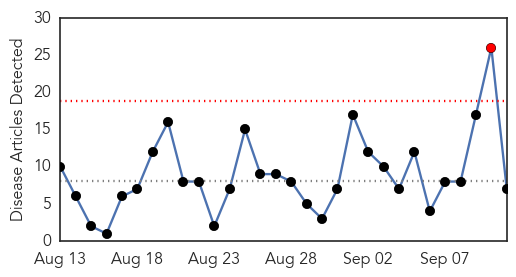
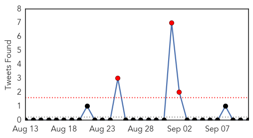
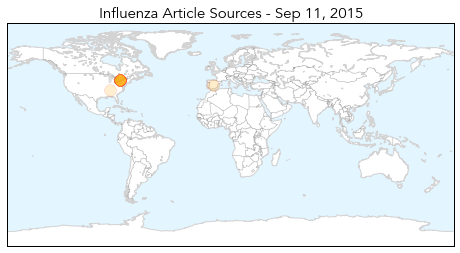
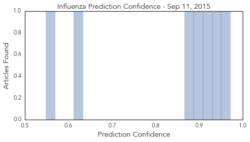

Dengue Fever
30-Day Web Trend
2 alerts, 1 warnings

30-Day Twitter Trend
3 alerts, 0 warnings

Article Locations

Article Confidences

Top Articles:
- 0.965
- Researchers use Big Data to track the spread of dengue fever
- 0.965
- University of Queensland scientists close in on first dengue treatment
- 0.942
- Dengue toll rises, ban on rapid diagnostic kits likely
- 0.918
- UK to help set up disease surveillance system
- 0.852
- Declare health emergency in Agency: CPI(M)
- 0.836
- Cases of malaria, dengue have fallen in the city
- 0.776
- NCKU raises awareness on dengue prevention among international students
- 0.677
- Patna Commissioner directs PMC to conduct anti-dengue drive in affected areas
- 0.607
- NMTV – Vijay Chougule calls for a special meet to discuss raising scare of malaria & dengue
- 0.600
- Manipal University gets US CDC grant
- 0.525
- Pangasinan town notes increase in dengue, sore eyes cases
Top Tweets:
-
No tweets found for Sep 11, 2015
Influenza
30-Day Web Trend
1 alerts, 0 warnings

30-Day Twitter Trend
3 alerts, 0 warnings

Article Locations
Article Confidences
Top Articles:
- 0.972
- Union says Ontario nurses can’t be forced to wear masks in flu season
- 0.931
- Union Says Ontario Nurses Can’t be Forced to Wear Masks in Flu Season
- 0.926
- Nurse flu shot/mask rule shot down
- 0.902
- Ontario Nurses Association Speaks Out Against 'Vaccine Or Mask' Policy
- 0.879
- Union says Ontario nurses can't be forced to wear masks in flu season
- 0.625
- Prehistoric giant virus will be revived by scientists
- 0.548
- State agriculture officials preparing for possibility of bird fl
Top Tweets:
-
No tweets found for Sep 11, 2015